شاهد قصة المركز2:03
المركز العربي للبحوث التربوية لدول الخليج
نبني معاً معرفة
نبني معاً معرفة
التعليم في الخليج
دراسات ومجلة محكّمة وملتقيات تجمع الباحثين وصنّاع القرار من الدول الأعضاء السبع، منذ أكثر من أربعة عقود.
مرّر لتكتشفالإمارات العربية المتحدةمملكة البحرينالجمهورية اليمنيةدولة الكويتالمملكة العربية السعوديةسلطنة عُماندولة قطرالإمارات العربية المتحدةمملكة البحرينالجمهورية اليمنيةدولة الكويتالمملكة العربية السعوديةسلطنة عُماندولة قطر
01
البحث
 دراسة · 2026رخص المعلمين في الدول الأعضاء
دراسة · 2026رخص المعلمين في الدول الأعضاء
 مستقبليات تربوية · 2026من البيانات إلى القرار
مستقبليات تربوية · 2026من البيانات إلى القرار
 تقرير علمي · 2026التنمر المدرسي
تقرير علمي · 2026التنمر المدرسي
 تقرير علمي · 2026خدمات وبرامج الإرشاد النفسي المدرسي
تقرير علمي · 2026خدمات وبرامج الإرشاد النفسي المدرسي
مكتبة تُقرأ، لا أرشيف يُخزَّن
كل إصدار بغلافه وملخصه وطريقة الحصول عليه. ما هو متاح يُحمَّل فوراً، وما يُطلب من المركز يُطلب بنقرة.
دراسة · 2026رخص المعلمين في الدول الأعضاء
مستقبليات تربوية · 2026من البيانات إلى القرار
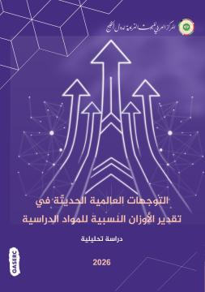
دراسة · 2026الأوزان النسبية للمواد الدراسيةتقرير علمي · 2026التنمر المدرسي
تقرير علمي · 2026خدمات وبرامج الإرشاد النفسي المدرسي
184إصداراً
127دراسة
44عدداً من المجلة
1994أقدم إصدار مفهرس
02
الحوار
أصوات عالمية على منصة المركز
تسجيلات المؤتمرات والورش من قناة المركز، معروضة في موقعه لأول مرة بدل أن تبقى على يوتيوب وحده.
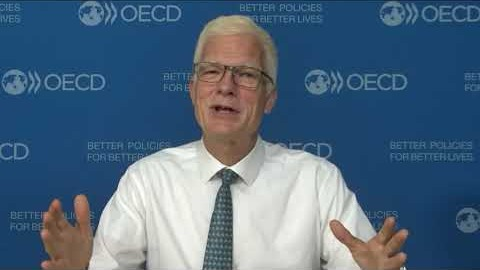
12:04الدكتور أندرياس شلايشرمن تسجيلات مؤتمرات المركز
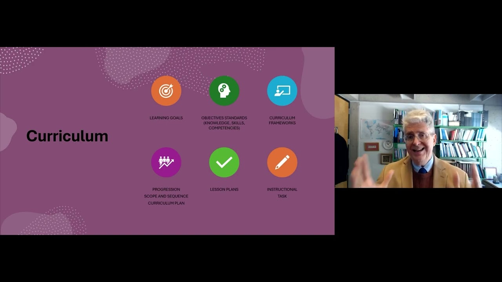
18:43البروفيسور فيرناندو رايمرزمن تسجيلات مؤتمرات المركز
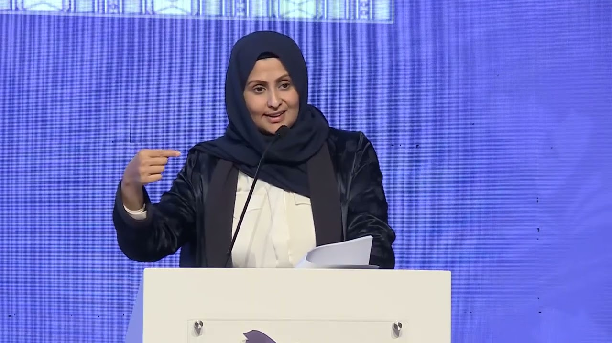
19:37الشيخة الدكتورة حصة بنت حمد آل ثانيمن تسجيلات مؤتمرات المركز
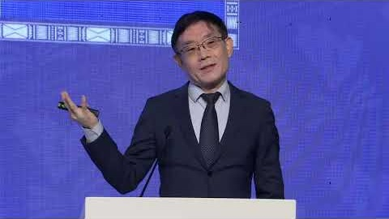
25:11البروفيسور فينغتشون مياومن تسجيلات مؤتمرات المركز
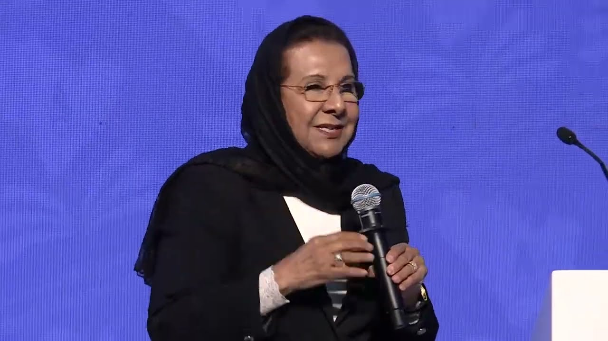
30:13الدكتورة موضي الحمودمن تسجيلات مؤتمرات المركز
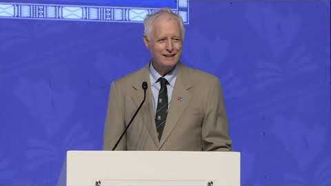
15:16البروفيسور مارك برايمن تسجيلات مؤتمرات المركز
03
الميدان


حاضر في الدول الأعضاء
مشاغل وملتقيات واجتماعات تنتقل بين عواصم الخليج، وكل فعالية بصورها وتاريخها ومكانها.
مشغل الإطار الاستراتيجي للتعليم العاممسقط · 27 سبتمبر 2026
الملتقى التعليمي لدمج ذوي الإعاقةالكويت · 20 سبتمبر 2026
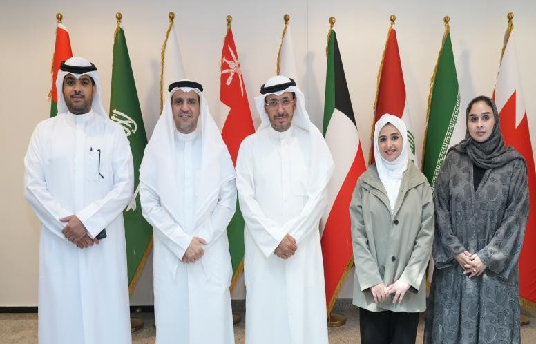
شراكة مع المنظمة الإقليمية لحماية البيئة البحرية18 أغسطس 2026
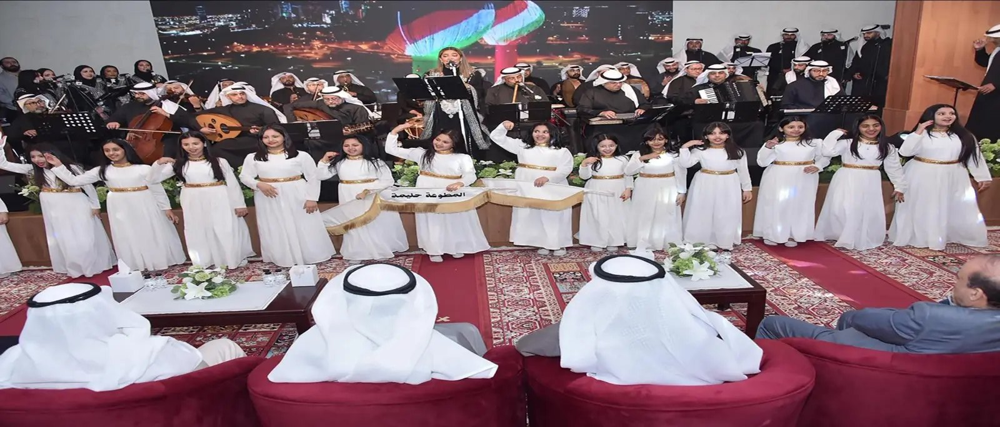
من فعاليات المركز الثقافيةالمواسم الثقافية
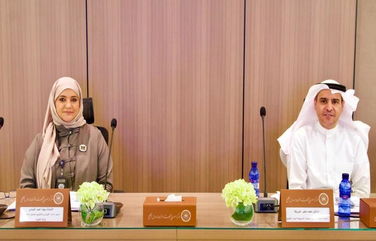
الاجتماع الثاني والأربعون لمجلس الأمناءالكويت · 9 يوليو 2026
توفير مرجعية علمية مشتركة تساعد على تطوير السياسات التعليمية استناداً إلى الأدلة والخبرات المقارنة
من كلمة د. محمد الشريكة، مدير المركز · مسقط، 27 سبتمبر 2026
الدورة الحالية مفتوحة
جائزة المعلم الخليجي للبحوث الإجرائية
تكريم للمعلمين الذين يحوّلون أسئلة صفوفهم إلى بحث. الشروط ودليل الترشح والتقديم كلها داخل موقع المركز.
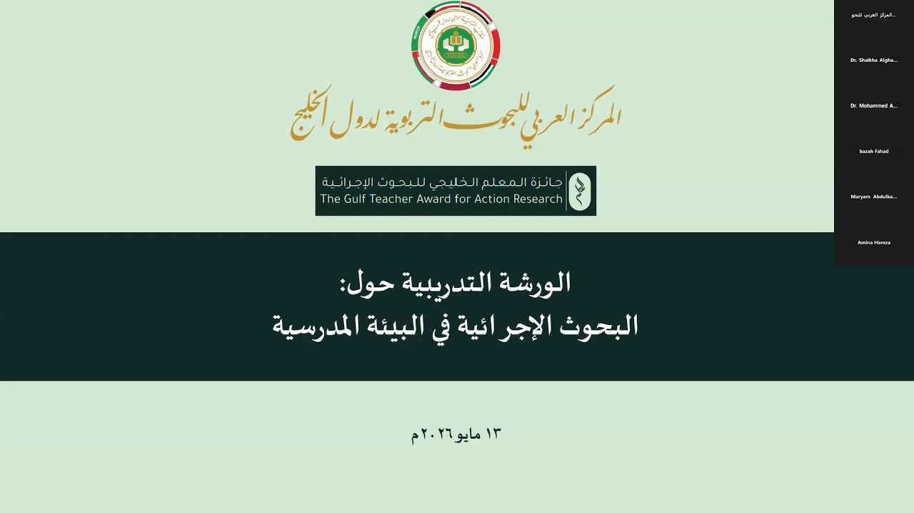
الورشة التدريبية حول البحوث الإجرائية1:40:30
28يوماً حتى إغلاق الترشحآخر موعد 31 أكتوبر 2026